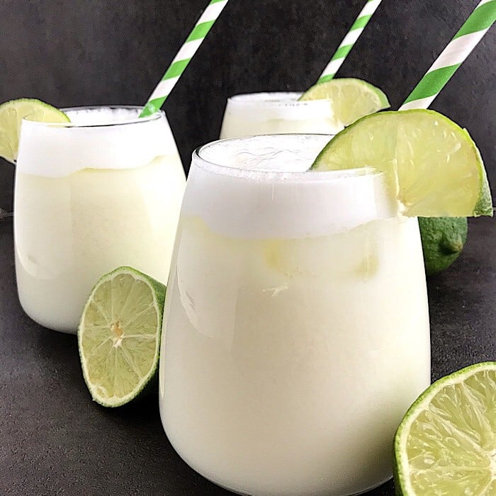

Brazilian Lemonade

You can't eat up classic food without drinking something classic, like the classic Brazilian Lemonade
A delicious and refreshing drink that makes your meal taste better
Ingredients:
- 2 limes
- 3 cups of water
- 1/2 cup of sugar
- 3 tbsp. sweetened condensed milk
- ice cubes
Steps:
- Wash limes thoroughly. Cut off ends and slice eight wedges.
- Place limes in a blender with water, sugar, sweetened condensed milk, and ice; pulse 5 times, or until smooth. Strain through a fine mesh strainer to remove rinds. Serve over ice!!